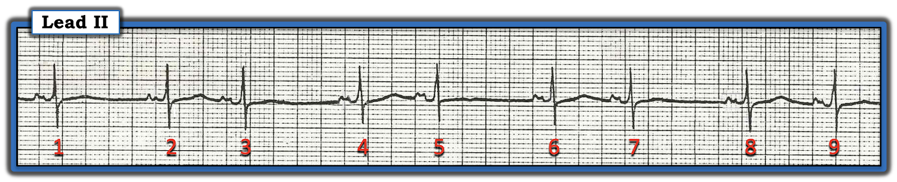
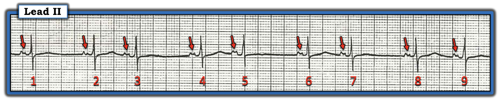
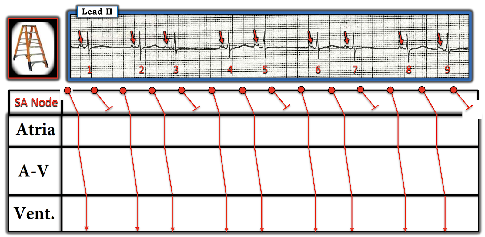

ECG Blog #312 — Nhịp đôi nhưng không phải Mobitz I
BẠN sẽ đọc dải nhịp chuyển đạo II trong Hình-1 như thế nào?


Cách tiếp cận CỦA TÔI với nhịp trong Hình-1:
Như mọi khi — tôi ưu tiên một cách tiếp cận hệ thống với mọi rối loạn nhịp tôi gặp, gói gọn trong mẹo ghi nhớ "Hãy xem P, Q và 3R" ("Watch Your Ps, Qs and the 3Rs") (Xem ECG Blog #185). Dù vậy, khi nhìn nhịp này — tôi không thể không nhận thấy có "nhịp theo nhóm" (group beating) theo kiểu trên thất (tức là QRS hẹp) dạng nhịp đôi (bigeminal).
ĐIỂM THEN CHỐT (PEARL) #1: Như đã bàn trong ECG Blog #232 — khi nhận ra một kiểu nhịp đôi trên thất mà nhát thứ 1 trong mỗi cặp được dẫn truyền, cần nghĩ tới các chẩn đoán phân biệt sau:
- Nhịp xoang kèm nhịp đôi nhĩ hoặc bộ nối (tức là cứ cách một nhát lại có một PAC hoặc PJC).
- Nhịp xoang kèm nhịp ba nhĩ — trong đó cứ mỗi sóng P thứ ba là một PAC "bị blốc" (không dẫn truyền).
- Một dạng nào đó của blốc SA ( = blốc xoang nhĩ, Sino-Atrial).
- Blốc AV độ 2 Mobitz I ( = Wenckebach AV) với dẫn truyền AV 3:2.
- Blốc AV độ 2 Mobitz II (với mỗi sóng P thứ 3 không được dẫn truyền).
==========================
Vượt ra ngoài phần cốt lõi: Về mặt kỹ thuật, còn một vài nguyên nhân khác gây nhịp đôi mà không cần xét tới trong ca hôm nay, vì nhịp hoặc không hoàn toàn là trên thất — hoặc — vì nhát thứ 1 trong mỗi nhóm không phải là nhát dẫn truyền từ xoang. Các nguyên nhân khác này gồm:
- Nhịp đôi thất (tức là cứ cách một nhát lại có một PVC).
- Rung nhĩ, nhịp nhanh nhĩ hoặc cuồng nhĩ kèm dẫn truyền kiểu Wenckebach.
- "Thoát–bắt được" ("Escape-Capture") (nhát thứ 1 trong mỗi nhóm là một nhát thoát bộ nối hoặc thoát thất — theo sau là một nhát được dẫn truyền).
==========================
ĐIỂM THEN CHỐT (PEARL) #2: Một cách khác để nhìn kiểu nhịp theo nhóm dạng nhịp đôi mà ta thấy trong Hình-1 — là mỗi nhóm 2 nhát được ngăn cách bởi một khoảng ngưng ngắn.
- Nguyên nhân thường gặp nhất của một khoảng ngưng là một PAC bị blốc. Trong thực hành lâm sàng — gặp PAC bị blốc phổ biến hơn nhiều so với bất kỳ dạng blốc AV nào.
- Vì vậy, chỉ trong vài giây nhìn bản ghi hôm nay — tôi đã nghĩ rằng về mặt thống kê, nguyên nhân có khả năng nhất của nhịp đôi với các khoảng ngưng ngắn thấy trong Hình-1 — sẽ là nhịp ba nhĩ, trong đó cứ mỗi sóng P thứ ba là một PAC bị blốc. Do đó, tôi muốn xem xét khả năng này ngay từ đầu khi đánh giá.
Đến đây — tôi áp dụng Cách tiếp cận P, Q, 3R:
- Sóng P — có hiện diện (các mũi tên ĐỎ trong Hình-2 đánh dấu các sóng P xoang dương ở chuyển đạo II).
- QRS hẹp — xác nhận nhịp là trên thất.
- Nhịp trong Hình-2 không "Regular" (đều) — nên Rate (tần số) thay đổi. Dù vậy — có nhịp theo nhóm, với kiểu lặp lại của các khoảng ngắn-dài luân phiên. Sóng P có Related (liên quan) với các phức bộ QRS kế cận — ở chỗ mỗi phức bộ QRS trong bản ghi này đều có một sóng P xoang đi trước với khoảng PR cố định và bình thường. Tuy nhiên, khoảng P-P không đều.


Tiếp tục với Cách tiếp cận hệ thống của tôi đối với nhịp:
Giờ chúng ta đã đánh giá có hệ thống 5 thông số trong Cách tiếp cận P, Q, 3R — đến lúc xét các thực thể thuộc chẩn đoán phân biệt của một nhịp đôi đã nêu ở ĐIỂM THEN CHỐT #1 phía trên:
- Bất chấp thực tế lâm sàng đã nêu ở ĐIỂM THEN CHỐT #2 phía trên — không có bằng chứng nào cho thấy nhịp trong Hình-2 là nhịp ba nhĩ, với mỗi nhát thứ ba là một PAC không dẫn truyền. Nghĩa là — không có biến dạng nào gợi ý một PAC không dẫn truyền trong sóng T của các nhát #1, 3, 5, 7 và 9.
- Nhịp trong Hình-2 không phải blốc AV độ 2 Mobitz I cũng không phải Mobitz II. Lý do ta có thể dễ dàng loại trừ blốc AV độ 2 — là vì nhịp nhĩ không đều! (các mũi tên ĐỎ trong Hình-2). Trừ một số ngoại lệ hiếm gặp, để có blốc AV — khoảng P-P ít nhất phải khá đều, và điều này chắc chắn không đúng với bản ghi này. Nghĩa là — không thấy sóng P nào ở gần điểm giữa của mỗi khoảng ngưng, như điều ta sẽ thấy nếu có một dạng blốc AV độ 2 nào đó.
- Các lý do khác cho thấy nhịp trong Hình-2 không phải là một dạng blốc AV gồm: i) Khoảng PR không tăng dần (như lẽ ra phải thế nếu đây là Mobitz I); và, ii) QRS không rộng (như lẽ ra phải thế nếu đây là Mobitz II).
- Nhịp trong Hình-2 không phải nhịp đôi bộ nối — vì sóng P ở chuyển đạo II dương ở mọi chỗ (sóng P ở chuyển đạo II sẽ âm nếu có các nhát bộ nối). Điều này cũng loại trừ "thoát–bắt được" — vì không có nhát thoát bộ nối nào.
- Nhịp này không phải nhịp đôi nhĩ — vì hình thái của mọi sóng P đều giống nhau (tức là đều có một khía rõ ở điểm giữa). Ngoài ra — khoảng PR trước mọi nhát đều không đổi.
- Bằng phương pháp loại trừ — ta còn lại việc xét một dạng blốc SA nào đó là căn nguyên có khả năng của nhịp trong Hình-2.
CẢNH BÁO (Vượt ra ngoài phần cốt lõi):
Đáng tiếc — chúng ta chỉ có dải nhịp 7 giây như trong Hình-2. Chúng ta không có điện tâm đồ 12 chuyển đạo ghi đồng thời.
- Quả đúng là các PAC xuất phát gần nút SA có thể rất giống sóng P xoang ở một hoặc nhiều chuyển đạo. Nói một cách chặt chẽ, khi không có điện tâm đồ 12 chuyển đạo — tôi không thể loại trừ hoàn toàn khả năng nhịp đôi nhĩ, trong đó lý do các sóng P trước nhát #1,3,5,7 và 9 rất giống sóng P của các nhát xoang — là vì các PAC này xuất phát rất gần nút SA.
- Cũng vì lý do đó — tôi không thể loại trừ hoàn toàn khả năng nguyên nhân của các khoảng ngưng ngắn trong Hình-2 là các PAC bị blốc không thấy rõ trên chuyển đạo duy nhất đang được theo dõi. Và mặc dù không thấy biến dạng có khía nào gợi ý PAC bị blốc trong Hình-2 — quả thật sóng ST-T của các nhát #1,3,5,7 và 9 trông dẹt hơn sóng ST-T của các nhát #2,4,6,8.
- Dù vậy — tôi nghĩ nhịp trong Hình-2 phù hợp nhất với blốc SA.
Khái niệm blốc SA:
Hiện tượng Wenckebach, trong đó dẫn truyền chậm dần cho tới khi thất bại — không chỉ giới hạn ở blốc AV độ 2 loại Mobitz I xảy ra tại nút AV.
- Trong số các dạng dẫn truyền Wenckebach khác — có blốc SA kiểu Wenckebach. Thay vì khoảng PR kéo dài dần cho tới khi cuối cùng một sóng P không dẫn xuống được thất (như trong blốc AV độ 2 dạng Mobitz I) — với Wenckebach SA, thời gian để xung động của nút xoang đi ra khỏi nút SA bị chậm dần — cho tới khi cuối cùng, một xung động bị blốc hoàn toàn, không ra khỏi nút SA được.
- Vì sự chậm dần này của xung động nút xoang diễn ra hoàn toàn bên trong nút SA — blốc SA không thấy được trên điện tâm đồ bề mặt. Điều này khiến chẩn đoán blốc SA khó khăn hơn nhiều.
Cơ chế của Wenckebach SA được giải thích tốt nhất bằng giản đồ bậc thang (Laddergram). Tôi minh họa khái niệm này trong Hình-3 — trong đó tôi đề xuất một giản đồ bậc thang để giải thích các dấu hiệu điện tâm đồ của nhịp hôm nay:
- Lưu ý trong Hình-3 có thêm một Tầng "phụ" vào giản đồ bậc thang — để minh họa sự chậm dần của các xung động nút xoang khi cố đi ra khỏi Tầng Nút SA. Lưu ý rằng cứ mỗi xung động thứ ba của nút SA bị blốc.
- Với 2 xung động nút xoang trong mỗi nhóm có thể đi ra khỏi nút SA — sự dẫn truyền các xung động này trên đường xuống thất diễn ra bình thường, khi chúng đi qua Tầng Nhĩ — Nút AV — và Thất. Như vậy, giản đồ bậc thang tôi đề xuất gợi ý rằng nhịp trong ca hôm nay là Wenckebach SA với dẫn truyền SA 3:2 (tức là cứ 3 xung động nút SA thì có 2 xung động đi ra được khỏi nút SA).


LƯU Ý: Có lẽ dễ nhất là hãy coi blốc SA như một blốc "đường ra" (exit) xảy ra ở mức nút SA. Giống như blốc AV độ 2 có thể thuộc loại Mobitz I và Mobitz II — blốc SA cũng vậy:
- Với blốc AV dạng Mobitz II — thay vì khoảng PR tăng dần cho tới khi một nhát bị rớt, khoảng PR vẫn không đổi cho tới khi một hoặc nhiều sóng P đúng lúc không được dẫn truyền.
- Với blốc SA loại Mobitz II — xung động nút xoang được dẫn ra khỏi nút SA không bị chậm dần — cho tới khi đột ngột, một hoặc nhiều xung động nút xoang đúng lúc không thể đi ra khỏi nút SA. Do đó, với blốc SA loại Mobitz II — khoảng ngưng do một hoặc nhiều sóng P không được dẫn ra khỏi nút SA sẽ bằng một "tỷ lệ cố định" nào đó của khoảng P-P ngắn nhất (tức là kết quả của blốc "đường ra" tỷ lệ 2:1, 3:1 hoặc tỷ lệ khác). Điều này trái ngược với Wenckebach SA — trong đó khoảng ngưng ngắn hơn hai lần khoảng P-P ngắn nhất.
Những "điều cốt yếu" về blốc SA được tóm tắt trong Hình-4. Tôi nhấn mạnh những điểm sau:
- Blốc SA không thường gặp! Tôi có thể đếm trên đầu ngón tay ngón chân số lần tôi gặp blốc SA thực sự suốt mấy chục năm tìm kiếm rối loạn nhịp này. Nhưng theo giản đồ bậc thang tôi đề xuất ở Hình-3 — tôi tin rằng đây là cách giải thích hợp lý nhất cho cơ chế của nhịp hôm nay.
- Ý nghĩa của blốc SA tùy thuộc vào bối cảnh lâm sàng mà nó xảy ra. Đây có thể là một rối loạn dẫn truyền lành tính khi khoảng ngưng chứa các xung động xoang không được dẫn truyền là ngắn và xảy ra ở một người vốn khỏe mạnh, không triệu chứng. Ngược lại — khi đi kèm các rối loạn khác của hệ thống dẫn truyền ở một bệnh nhân có triệu chứng với bệnh tim nền — sự hiện diện của blốc SA có thể ảnh hưởng đáng kể đến kết cục lâm sàng. Ở người cao tuổi bị ngất — blốc SA có thể là một thành phần của hội chứng suy nút xoang (Sick Sinus Syndrome). Dù vậy, do không có thông tin trong ca hôm nay — ý nghĩa lâm sàng (nếu có) của nhịp trong Hình-3 chưa rõ.

============================
Các bài ECG Blog liên quan đến ca hôm nay:
- ECG Blog #185 — Ôn lại Cách tiếp cận P, Q và 3R để đọc nhịp một cách hệ thống.
- ECG Blog #188 — để ôn lại cách đọc (và/hoặc vẽ) giản đồ bậc thang (kèm liên kết tới hơn 50 ví dụ giản đồ bậc thang có giải thích).
- ECG Blog #232 — Ôn lại khái niệm nhịp đôi (có thể do nhịp đôi nhĩ hoặc nhịp đôi thất, dẫn truyền Wenckebach — hoặc các nguyên nhân khác — Nghe Audio Pearl #47).
- ECG Blog #163 — Ôn lại một ca nhịp đôi "thoát–bắt được", trong đó có thể có blốc SA tham gia.
- ECG Blog #256 — Ôn lại một ca khác về nhịp đôi "thoát–bắt được" (trong đó dẫn truyền ngược dòng từ nhát thoát bộ nối dẫn tới "bắt được").
- ECG Blog #164 — Ôn lại một ca blốc AV độ 2 Mobitz I, với phần bàn luận chi tiết về "Dấu chân" của Wenckebach.
- ECG Blog #33 — Ôn lại một ca có PAC bị blốc và dẫn truyền lệch hướng.
- ECG Blog #66 — Ôn lại một ca có PAC bị blốc và dẫn truyền lệch hướng.
- ECG Blog #147 — Ôn lại một ca có PAC bị blốc.
- ECG Blog #57 — Ôn lại một ca nhịp đôi nhĩ kèm PAC bị blốc.